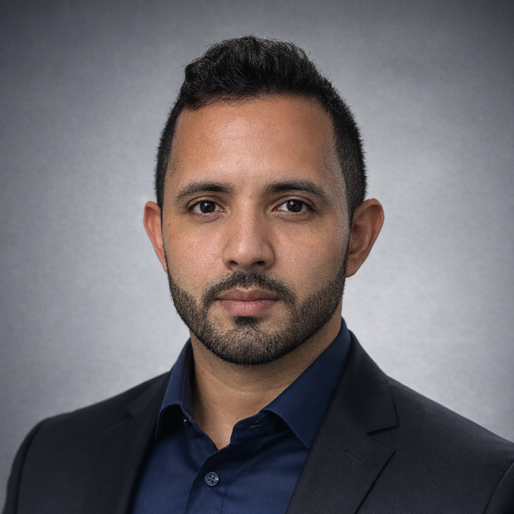

Evidência
Integridade e Consistência
Análise de coerência entre documentos digitais, metadados, registros técnicos e a narrativa apresentada no processo ou na investigação.
Assistência técnica para examinar logs, registros de sistemas, autenticação, assinaturas eletrônicas, metadados, documentos digitais e outros elementos usados para sustentar ou contestar fatos tecnológicos.
Atendimento remoto nacional para demandas compatíveis com análise de evidências disponibilizadas. Atuação presencial em Belém e Região Metropolitana quando tecnicamente necessária e previamente definida.

Engenheiro de Computação
A conclusão depende da qualidade, integridade, contexto e cadeia de obtenção dos elementos disponibilizados.
Análise de coerência entre documentos digitais, metadados, registros técnicos e a narrativa apresentada no processo ou na investigação.
Exame de logs, trilhas de auditoria, eventos, registros de sessão, IPs, dispositivos e outros dados técnicos fornecidos para análise.
Análise técnica de fluxos de autenticação, assinaturas eletrônicas, certificados, carimbos de tempo, biometria documentada e mecanismos de aceite.
Metadados, versões, origem declarada, mecanismos de aceite e coerência entre artefatos digitais.
Elementos técnicos relacionados a acesso, autenticação, eventos de segurança e rastros de sistemas, conforme os dados disponíveis.
Formulação de perguntas técnicas, análise crítica de laudos e organização das conclusões em linguagem compreensível.
Nenhuma conclusão é prometida antes do exame dos elementos disponíveis.
Questão, evidência e objetivo
Identificação do fato tecnológico em discussão, dos arquivos ou registros disponíveis e das perguntas que precisam ser respondidas.
Coerência, rastros e limitações
Exame técnico dos artefatos disponibilizados, preservando a distinção entre o que é demonstrado pelos dados, o que é apenas compatível e o que não pode ser concluído.
Conclusões compreensíveis e auditáveis
Organização das conclusões, resposta a quesitos e suporte técnico para que advogado, empresa ou parte compreendam o alcance real da evidência.
O que a análise digital pode — e não pode — afirmar.
Muitas demandas documentais podem ser analisadas remotamente, desde que os arquivos e registros necessários sejam disponibilizados de forma adequada. Quando o objeto exigir exame físico, coleta presencial ou acesso específico a equipamento, o escopo precisa ser avaliado antes da contratação.
Somente se os elementos técnicos permitirem uma conclusão dessa natureza. Um registro de IP, dispositivo ou sessão, isoladamente, pode ter limitações. O parecer deve distinguir identificação técnica de inferências sobre autoria humana.
Podem ser analisados os registros, fluxos, metadados e mecanismos técnicos apresentados como evidência. A conclusão depende da documentação disponível e não pressupõe que um mecanismo seja válido, inválido, seguro ou fraudulento antes da análise.
Não. O trabalho é técnico de engenharia. O parecer e os esclarecimentos subsidiam o advogado, que permanece responsável pela interpretação jurídica e pela condução do processo.
Informe quais registros, documentos ou sistemas estão envolvidos e qual dúvida técnica precisa ser esclarecida. Não envie senhas ou credenciais de acesso pelo formulário.